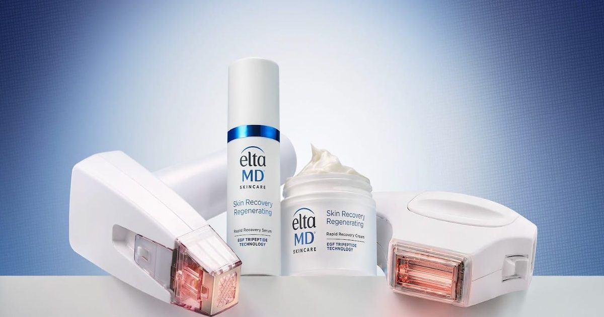

Новая система ухода за кожей нацелена на восстановление после лазерных процедур и процедур с микроиглами
Профессиональная эксклюзивная сыворотка и крем используют эпидермальный фактор роста и аминокислоты для поддержки восстановления кожного барьера, а в небольших клинических исследованиях сообщается об улучшении покраснения, увлажнения и восстановления после эстетических процедур.